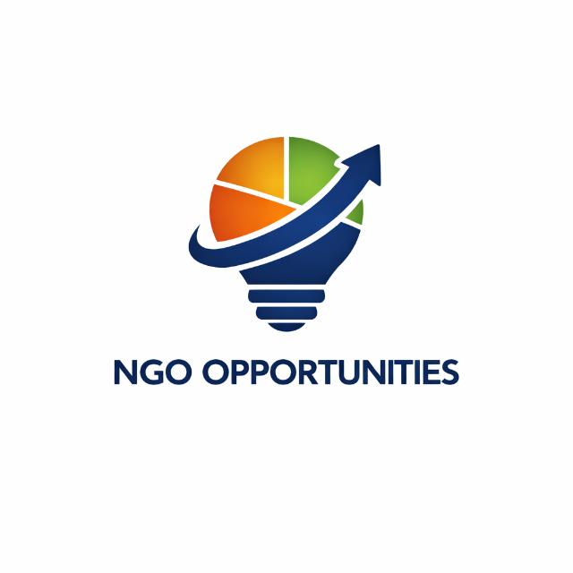

CV Writing
Structuring a CV that gets shortlisted, turning duties into achievements, and tailoring it per role.

OpportunitiesCareer Prep Video Series
Short, practical videos on CVs, cover letters, interview preparation, and interview simulations built for job seekers applying to NGO and development-sector roles.
Every video fits into one of five topics. New episodes are posted regularly.
Structuring a CV that gets shortlisted, turning duties into achievements, and tailoring it per role.
Opening lines, paragraph structure, and how to show you understand an organization's mission.
What to expect and prepare for at each stage — screening call, panel interview, written test, and final interview.
Full mock answers to real interview questions, including the STAR method for behavioral questions.
Where NGO jobs are posted, decoding job-advert jargon, and building a network in the sector.
NGO Opportunities grew out of a WhatsApp community of 500+ members sharing NGO job openings. This channel turns the questions members ask most often — about CVs, cover letters, and interviews — into short videos anyone can watch before their next application or interview.